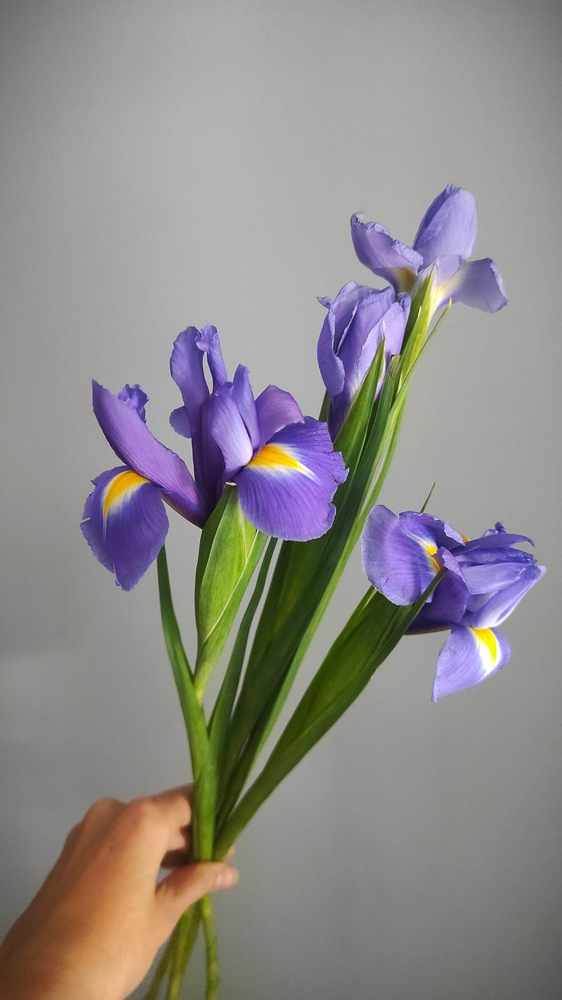

Irișii (Iris) sunt plante perene cunoscute pentru florile lor elegante și colorate. Originari din zonele temperate ale emisferei nordice, irișii au flori în nuanțe de albastru, violet, alb, galben și alte culori. Florile au trei petale verticale (standardele) și trei petale căzute (căzătoarele). Irișii preferă soluri bine drenate și expunere la soare. Sunt folosiți în grădini pentru a adăuga culoare și structură, fiind populari și în aranjamente florale. Simbolizează înțelepciunea, credința și speranța în diverse culturi.
